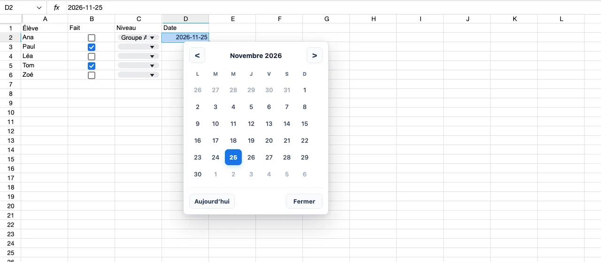

Cases, listes et calendrier

Cases à cocher
Sélectionner les cellules, Insertion › Case à cocher. Un clic coche ou décoche ; la cellule vaut TRUE ou FALSE.
=SI(B2; "fait"; "à faire")
=SOMMEPROD(B2:B6; C2:C6)
=SOMMEPROD(B2:B6; B2:B6)La deuxième formule additionne les valeurs de la colonne C dont la case est cochée ; la troisième compte les cases cochées.
Listes déroulantes
Sélectionner les cellules, Insertion › Liste déroulante….
| Source | Contenu |
|---|---|
| Valeurs | les options, une par champ ; Ajouter une option ; sans virgule |
| Depuis une plage | une plage dont les cellules sont les options : Feuille2!$A$1:$A$10 |
Une plage sans $ se décale d’une cellule à l’autre, comme une formule recopiée. Si ses cellules changent, les options suivent.
La cellule affiche une flèche ; un clic ouvre les options. Une autre valeur que celles de la liste n’est pas acceptée.
Calendrier
Un double clic sur une cellule de date ouvre un calendrier : choisir un jour, changer de mois par < et >, Aujourd’hui pour la date du jour. Il s’ouvre sur toute cellule qui a un format de date, même vide, sauf si elle contient une formule ou si elle est verrouillée.
Pour une colonne de dates à remplir au calendrier : la sélectionner et lui donner le format Date.
Retirer
Suppr retire la case ou la liste de la cellule, avec sa valeur.
Cases et listes sont enregistrées dans le fichier Excel ; les cases y sont des cases à cocher d’Excel.